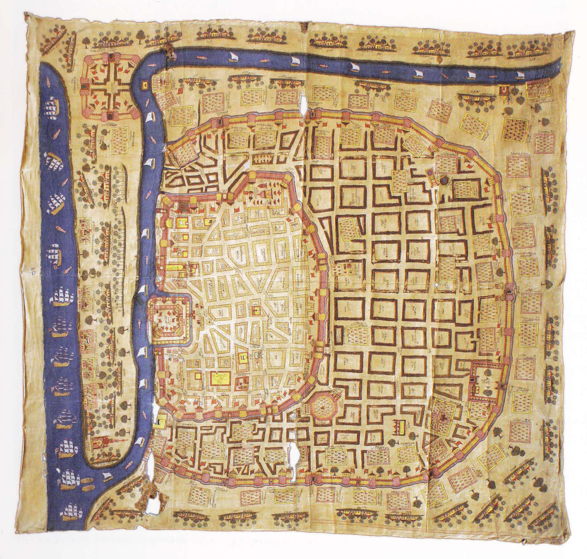
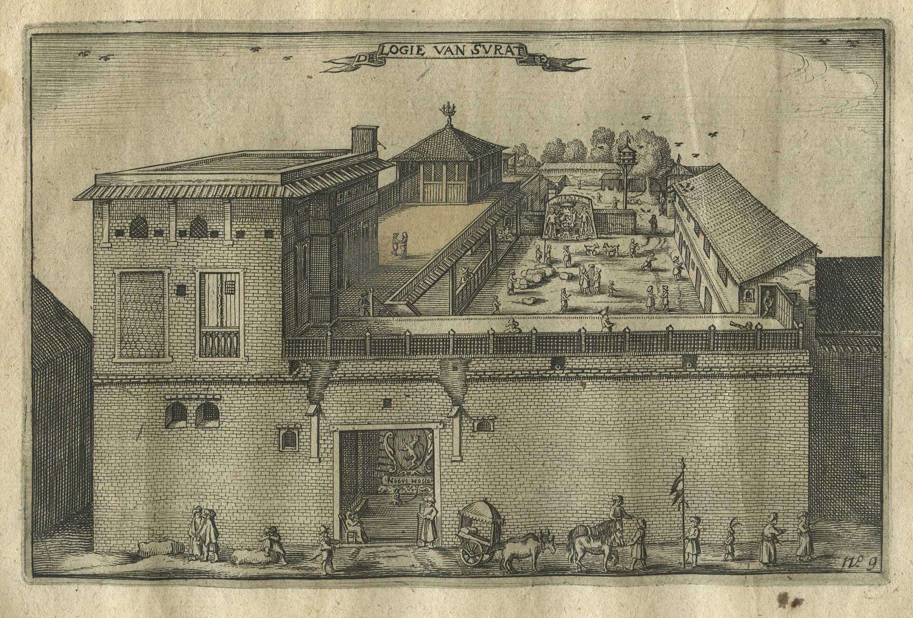

Chapter Two
1626
"A factory, they call it, though no wall yet built could keep out a monsoon, let alone a Hollander with a grievance."
— Factor's letter, Surat, 1626
1626: The Man Who Came Back Wrong

Chapter Sections
I. The Ship from Amboyna
A ship comes up the river on a grey afternoon, riding low, sails slack, in no hurry at all. Word comes off it before the crew do. One name, passed hand to hand along the waterfront the way bad news travels — faster than good news ever does.
Amboyna.
Nobody on the dock has the whole of it yet. Just the name.
By the time it reaches the tavern by the stairs, the place has changed the way places change when nobody's watching closely. Longer bar. Flagstones where the rushes used to be. A new sign nobody remembers the old one well enough to miss. The boy who signed his contract here years back, for twenty pounds and a share of the pepper, sailed south and never came back to see any of it. The bar didn't keep count of him. It only kept standing.
The ships on the river have multiplied. The Company has factories now — Surat, Masulipatam, Agra — small English footholds on coastlines and river towns that never asked for them, each one a bet that the local ruler stays friendly and the weather stays kind.
Amboyna was one of those bets.
Word on the dock says it didn't pay off.
II. The Man Who Came Back Wrong
The light's gone flat, grey through cloud, and the river's low enough to show the mud — dark, streaked, the low-tide smell of brine and rot coming in through the window.
He walks in like a man not sure the ground will hold. Slow. Careful. Thin in a way that isn't hunger, or isn't only hunger — the thinness of someone who's stopped eating because food has become a problem instead of a comfort. His clothes are English but old and hang wrong, made for a bigger man than the one left inside them.
He sits. Doesn't order. Hands flat on the counter, trembling, and his eyes are fixed on the wood but not looking at it — looking at somewhere behind the eyes instead, a room with no windows.
This bar has seen the look before. Men who come back changed in ways you can't quite point to. The tremor. The stillness. A kind of attention that's really its opposite — total withdrawal into a place nobody else can follow. The sea does this to some men. The tropics do it worse. Amboyna did it worst of all.
His name is Daniel. Factor for the Company, stationed on one of the Spice Islands — the nutmeg islands, the most valuable dirt on earth, or so the Dutch believe. He went out young, ambitious, sure he'd come back with a fortune and a story worth telling.
What he found was the Dutch.
Ashby comes over. Sets a tankard down without asking what he wants — you don't ask a shaking man what he wants, you just put ale in front of him.
Drink, she says. Not a suggestion.
He drinks. One pull, then another. The tremor slows. Doesn't stop. Slows is the best this bar can do for him this afternoon.
III. The Water
It takes Daniel three days to talk. Three days of sitting, drinking ale he can't taste, flinching at the door. Ashby puts food in front of him. He pushes it round the plate. The other patrons give him room. The river does its business outside the window; the ale stays good; Daniel sits.
On the fourth day, Carter comes in. Ships' chandler — rope, tar, canvas, whatever a vessel needs before it sails — big man, big voice, and he's known Daniel long enough to know he isn't just another broken sailor. Pulls up a stool. Orders two ales. Slides one across.
You're Company. Amboyna.
Not a question. Carter knows because Carter knows everything that moves through the docks.
Daniel doesn't look at him. Drinks some of the ale. They killed them, he says. His voice is flat, worn smooth from saying it too many times already. They killed all of them.
I know, Carter says, quieter than usual. We heard.
They arrested us on false charges. Said we were plotting with the Japanese mercenaries to take the fort. There was no plot. They dragged us out at night. Ten Englishmen. Ten Japanese. Put us in a room and asked questions, and when we didn't answer the way they wanted—
The bar has gone quiet around them. Men who weren't listening are listening now.
Daniel's sentence stays broken where it stopped. Some sentences do.
IV. The Room
The room is coral stone and has no window, and it is three years ago, and it is also always.
There is a table, and a man behind the table who asks the questions, and a clerk beside him who writes down the answers, and the writing is the part Daniel cannot stop watching, even now, even here — the pen moving patiently whether he speaks or screams, because the paper does not need him to speak. The paper was finished before he was brought in. His answers are a formality the ink is waiting to receive.
The question is always the plot. Who ordered it. When it was to be. Who else. There is no plot, Daniel says, and the man behind the table nods, unhurried, unoffended, the way a man nods at a sum that hasn't come out right yet, and the cloth goes over Daniel's face again, and the water comes again.
Nobody who has not had it done can be told what it is. It is not like drowning; it is drowning, on dry land, in a chair, at a speed of another man's choosing — the body's whole animal machinery screaming its one message while somewhere above the water a voice keeps asking, mild as a schoolmaster, who ordered it, when it was to be, who else. Then the weight on his belly, and the water coming back up, and the room again, and the pen, patient, waiting. Then again. Hours are the wrong measure. There are only two times in the room: the water, and the question.
Through the wall, for two days, he can hear Towerson. Not words. Just the fact of him — the best man Daniel has ever served under, going the way everyone goes in that room, by lengths. On the third day the wall goes quiet, and the quiet is worse, and some days later — he has lost the count by then, the one thing he has never lost before or since — they come in and look at him the way men look at stock, and one of them says a word to the other, and the word is Batavia, and no one ever tells him why. He has been trying to work it out for three years: what he said, or didn't; what he was worth, or wasn't; why the axe for ten men and the boat for him. There is no answer. It was an entry in a ledger he will never see, made by a clerk with a patient pen, and it is the only mercy anyone showed at Amboyna, and it was not mercy. It was paperwork.
V. What Came Back
In the bar, three years and eleven thousand miles from the room, Daniel says almost none of this.
Water, he says. They used water. And lets the rest of the sentence go where the first one went.
A man by the fire has stopped coughing. Nobody is talking about the price of tar.
Towerson was our head of factory. My superior. They took him first — two days before he broke. Made him watch the rest of it after. He told them there was no plot, that we were merchants, not soldiers. They'd already decided. Orders from Amsterdam. The charges were paperwork. The torture was paperwork. The killing was the actual point.
How many? Carter asks.
Ten Englishmen. Beheaded. The Japanese were burned. I wasn't there for it — they'd already shipped me to Batavia as a prisoner. Two years before they let me go. Came back on a Dutch ship. The Company gave me Surat after. A desk and a ledger, where the heat makes you want to die and nobody mentions Amboyna at all.
He drinks. His hands are steadier now — as steady as they're going to get. Something in his face has shifted. Not relief. More like a man who's opened a door he's kept shut a long time and found the room behind it exactly as bad as he remembered.
Carter, for once, has nothing to say. He looks at Daniel. At his ale. At the river through the window, grey and slow and not caring either way.
What he does instead is stand, walk to the counter, and take down the squat stone bottle the house keeps for the Dutch skippers' trade — genever, juniper spirit, the stuff the river's Hollanders take against the cold — and uncork it, and pour the whole of it, slowly, onto the flagstones. Nobody stops him. Nobody charges him for it either. It is a small, useless, entirely understood gesture, and the smell of juniper hangs over the room for an hour afterwards like a verdict. It will be a long generation before anyone in this house asks for the Dutch spirit by name again — and when someone finally does, there will be a Dutch king on an English throne, and the drink will have changed its papers.
The Spice Islands are finished for us, he says eventually. Company's pulled out. Dutch have the forts, the soldiers, the monopoly. Nobody's fighting them for a nutmeg tree.
No, Daniel says. Not there.
So the Company's pivoting. Carter leans in. India. Cotton, not cloves. He says it like a man changing the subject on purpose, which he is.
Daniel doesn't answer. He's back in a room in Amboyna, water in his lungs. Cotton is happening in a country he can name. Amboyna is happening behind his eyes, which is closer.
VI. The Offer
Word travels. It always does, in a bar this close to the docks — what Daniel told Carter is halfway round Wapping within the week, dressed up a little more with each telling, though nobody who's added to it has managed to make it worse than the plain truth already was.
The Company hears it too. Word like that always finds its way back to Leadenhall Street eventually, and Leadenhall Street does not care for it.
He comes in on a Tuesday, a man Daniel's never seen before — precise coat, precise voice, the kind of politeness that has been trained rather than felt. Introduces himself as Pryce, on the Company's business, and sits without being asked, the way men do when they've decided in advance that the seat is theirs.
The Company is grateful for your service, Pryce says. Batavia. Two years a prisoner, and you came home able to hold a pen and keep a ledger, which is more than some men manage after less. Surat's been good to you, I hope.
Daniel says nothing. He has learned, this past year, that saying nothing is the safest answer to most sentences that start with the Company is grateful.
There's a difficulty, Pryce goes on. Talk. In bars. About Amboyna. About the passes, the questioning, the numbers. It does the Company no good, and it does you no good either, dwelling on it the way you have been. We could improve your situation considerably. A better posting. A clerk's wage doubled. Whatever debts your family carries, cleared. In exchange for — Pryce chooses the word with visible care — quiet. Just quiet. Let the thing rest where it lies.
Daniel looks at him for a long moment. You want me to stop telling people what happened to Towerson.
I want you to consider your own future, Pryce says. Nothing more sinister than that.
Ten Englishmen went into a room, Daniel says. Ten Japanese. I watched them take the first one out, and I heard the rest of it through a wall for two days before they came for me. You are offering me money to stop saying that sentence out loud.
I am offering you a better life than the one you've currently arranged for yourself, Pryce says, unbothered. Most men would take it without needing it explained twice.
Daniel picks up his ale. Drinks half of it before he answers, giving himself the time Nell taught him to take, instead of saying the first thing that arrives.
No, he says, finally. Not because I want to be poor. Because I've already paid what this cost once, and I'm not selling it a second time.
Pryce doesn't argue. Men like Pryce never argue with an answer, only note it. He finishes what's left of his own drink, sets a coin on the bar for it precisely, and stands.
You'll have the same posting tomorrow that you had yesterday, he says. Nothing changes because of this conversation. I'd only ask you to consider how much less it costs everyone if the story simply stops being interesting.
He leaves. Daniel sits a while with the offer where Pryce left it, turning it over slowly, the way he turns over most things now, before setting it down for good.
VII. The Woman Who Came Looking
She comes in on a Friday. Not young, not old. Dust on her shoes, a thin shawl, the particular set of a woman who has walked further than she meant to because there was no choice about it.
She stands in the doorway. Her eyes go face to face, searching, and stop on Daniel. Whatever was holding her together on the walk here falters, just for a second.
Daniel doesn't see her at first — he's watching his ale, the way he does most hours now. Something makes him look up. He sees her. His face does something complicated: guilt and relief and a kind of frightened tenderness all trying to happen at once.
Nell, he says. Just the name.
She crosses to him without running. Sits on the stool beside him. Doesn't touch him. Doesn't cry. Just looks — the thinness, the shaking hands, the general look of a man taken apart and reassembled by somebody who didn't much care whether the pieces fit.
Daniel, she says again. Same word. Different weight.
I'm sorry, he says, voice cracking on the second word. I couldn't write. I sat with the paper and couldn't think what to say. How do you tell someone you're not the man they remember?
You write the letter, she says. That's how. You send it and let the person who loves you decide if you've changed too much. You don't make that call for them.
They killed everyone, Nell. Held me under until I thought I was dying, and then again, and the only reason I'm here is they decided Batavia instead of the axe. I don't know why. I've been trying to work it out for three years.
She puts her hand on his arm. He flinches — not from her, from the touch itself, a thing he's out of practice at surviving. She doesn't pull back. Holds it there, light, the way you hold a bird you're afraid of frightening off.
You're here, she says. Sitting in a bar, alive, and I found you. That's enough. That's the start of enough.
I'm not the man you married.
No, she says. And I'm not the woman you married either. We can be new people together, or old people who don't fit anymore. But we work that out here. Not through three more years of silence.
Ashby sets down bread, cheese, something that might be stew, and leaves without a word — she knows which moments in her bar are not hers to be part of.
Daniel eats. Nell watches him, and for the first time since he walked through that door, his hands are still.
VIII. Cotton

Carter's back most evenings, treating the bar like an annex of his shop. Tonight he's got news, and Carter with news is Carter at full volume.
Company's moving everything to India, he tells the room in general. Spice Islands are finished. But India — India's where the money's going now.
What money? A dockworker, not looking up from his cup.
Cotton. Carter says it like the man's slow. Indian cotton — light as air, printed in colours that don't wash out. Women in the City can't get enough of it. Calico plain, chintz printed. Comes off the Coromandel coast by the ton, and the price has tripled in ten years. Men are making more off Indian cotton in a decade than their grandfathers made off wool in a lifetime.
And the weavers? somebody else asks. Spitalfields lot?
Furious. Can't compete with it — cheaper, lighter, better, and the women want it regardless. There's been rioting. Bonfires of the stuff in the street. Parliament's talking bans.
They're going to ban cloth?
They're going to try, Carter says. That's what a government does when it can't compete with something — it legislates against it instead. Won't work. The cotton's too good and too cheap.
Behind him, two men are arguing with real heat over whether a barrel of Carter's own tar was short-measured last month, and Carter, mid-sentence about looms and Parliament, breaks off just long enough to shout that it was not short-measured, he weighed it himself, before picking the cotton thread back up without missing a beat.
Daniel isn't listening. He's at the end of the bar with Nell, who's come back every evening since that first Friday. She talks. He listens. It suits them. He's eating now. Drinking his ale instead of staring into it.
The Company's factories are becoming forts — walls going up in Surat, cannon on the factor's roof, letters home that call it nothing to worry about. Carter doesn't see a problem in it. Carter sees rope orders. Daniel doesn't see it at all. He knows about the water, and about learning to be touched again by someone who loves him. That's enough history for one man to carry in one evening.
IX. The Walls Get Higher

Years pass. The bar fills and empties and fills again — same cycle, same ale, slowly improving. Daniel and Nell come in less often now, and when they do, it's a different quiet than the one he walked in with. Companionable. The quiet of two people who've said the worst of it out loud and are still sitting next to each other.
The Company keeps growing. Bigger ships, bigger warehouses, busier docks. Sir Thomas Roe secured the factory at Surat years back; Bombay came later, a wedding gift from a Portuguese dowry that nobody at the time understood the size of. The factories have started growing walls. Nobody in this bar has said it out loud yet, but a factory stores goods, and a fort controls territory, and the difference is starting to show in the letters home.
Just a wall, the letters say. Bricks and mortar. Nothing to worry about.